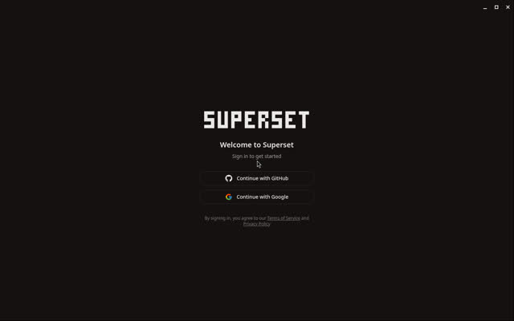

Leaderboard / #7 of 13 / Installed or launched
Superset
Mac or Linux teams willing to sign in, who want automations and an SDK.
Weighted feature assessment72.5range 70.0 to 75.0doc coverage 95% / Launchedmeasured: Launch probe
Scores by category
Rubric breakdown
- AAgent breadthweight 154
- BIsolation and parallelismweight 154
- CReview, merge and PR flowweight 154
- DRemote, cloud and mobile reachweight 104
- EOpenness and licenseweight 103
- FMaturity and momentumweight 154
- GLinux setup friction (measured)weight 102
- HPricing and BYO modelweight 54
- IDocs and transparencyweight 5n/r
Verdict
Strengths and weaknesses
Strengths
- Very active (release on snapshot day)
- Claims 100+ parallel agents
Weaknesses
- Sign-in wall at first launch
- Elastic License 2.0 is not OSI open source
Evidence
What we saw and where it came from
- Hands-on (this box)
- App launched on Linux (11.4 s, 895 MB) but first screen requires GitHub or Google sign-in. Stopped there (no account creation).
- Launch probe
- First window 11.41 s, process-tree RSS 895 MB on Xvfb.
- Notes
- 989 open issues+PRs; desktop-v1.39.0 released on snapshot day.

Sources
Feature facts
From docs, repos and our probes
- Platforms
- macOS; Linux AppImage/deb on releases (sec: 'experimental'); no Windows build (sec)
- Supported agents
- sec: Claude Code, Codex, Gemini CLI, Copilot, Cursor Agent, OpenCode, Amp, any CLI
- Parallelism
- Worktree per task; markets '100+ agents in parallel'
- Isolation
- Git worktrees
- Review, merge, PR
- sec: built-in diff viewer, branch-and-PR-first
- Remote, cloud, mobile
- sec: iPhone/iPad app (Pro), CLI + SDK
- MCP
- sec: SDK/MCP control
- Cost visibility
- unknown
- Model choice
- Via agents
- Setup
- Install app, then sign in
"unknown" means we found no source and did not guess.